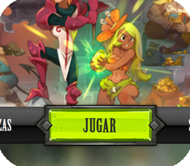

Design Patterns

Diseño y desarrollo de un videojuego con Patrones de Diseño Software en Python, desde cero (sin diseños ni reglas previas) y en solitario.
Prácticas en Empresa
Grupo Vermon es una Pyme de desarrollo Software en Albacete. Mis funciones fueron desarrollar una aplicación web en Angular 6, NodeJS y mySQL para la gestión de incidencias de soporte técnico para una empresa eléctrica.
El equipo estaba formado por 2 desarrolladores, y empezamos la aplicación desde 0.
Brazor

Diseño y desarrollo FullStack de un videojuego online multijugador de estrategia desde cero, en solitario, con NodeJS y MongoDB y sin frameworks en front.
Hackaton Autismo

Diseño y desarrollo FullStack de una aplicación en React-Native y NodeJS para organizar las tareas diarias de niños con Autismo para el evento “Hack for Albacity”.
Investigación

Desarrollador React de una plataforma web gamificada para un proyecto de Investigación sobre Interacciones Digitales
El objetivo era proveer a alumnos de colegios en pueblos pequeños un mundo virtual en el que pudieran ver los avatares de otros alumnos en tiempo real, realizar actividades simultáneamente, etc. Empecé el proyecto desde 0 siendo el único programador, desarrollé el primer prototipo de la ciudad virtual.